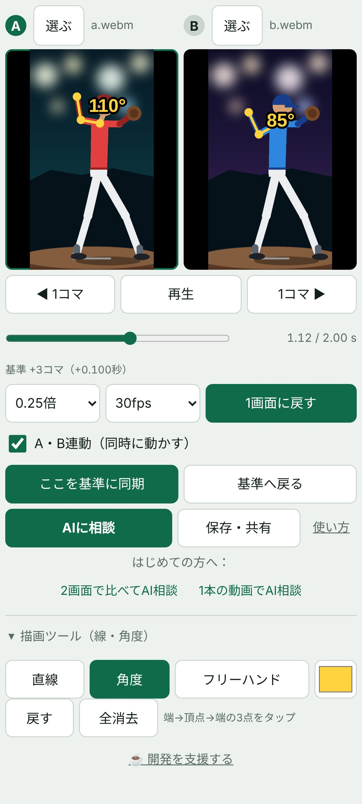
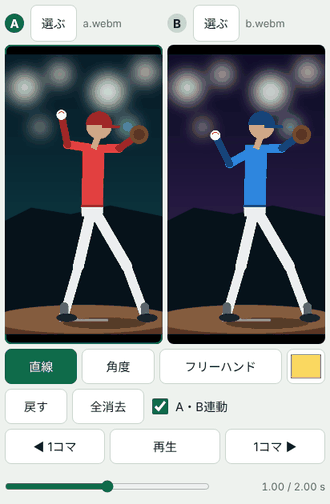

フォームノートの使い方
動画で野球のフォームをチェックできる無料のツールです。1コマずつ進めたり、線を引いたり、角度を測ったり、2つの動画を並べて比べたりできます。動画はお使いの端末の中だけで処理されます。
アプリを開く
サンプルの動画はイラストです。実在の選手ではありません。
はじめかた
動画を選ぶ
動画を選ぶを押して、スマホの中の動画を選びます。2つの動画を比べるときは、先に2画面で比較を押してから、Bの動画を選びます。横向きの動画も縦向きの動画も、自動で見やすく表示されます。 動画は、まとめて複数選べます。2本以上選ぶと、名前の横の◀ ▶で、前後の動画にすばやく切り替えられます（切り替えると書き込みは消えます）。
見たい瞬間を探す
1コマ ▶や◀ 1コマで、1コマずつ進めたり戻したりできます。バーをドラッグすると大きく移動できます。再生を押すと、0.1倍から1倍までの速さで再生できます。A・B連動がオンのときは、2つの動画が一緒に動きます。

1コマ ▶を押すたびに、1コマずつ進みます。選手はイラストです。
線を引く・角度を測る
道具を選んで、動画の上に書き込みます。書き込みは、コマを進めても画面に残ります。位置が変わっていないかを確かめるのに便利です。
画像を保存する
画像を保存を押すと、書き込み入りの画像ができます。画像の下には、アプリの名前、リンク、QRコードが入ります。共有した相手は、QRコードを読み取ってアプリを開けます。対応しているスマホでは、共有するを押すと、LINEなどのチャットアプリへ画像をそのまま送れます。アプリのリンクも文章として一緒に送りますが、表示されるかどうかはチャットアプリによります。画像を長押しして保存したり、スクリーンショットで残したりすることもできます。
重要な場面を4枚並べる・AIに相談
画像を保存を押し、前後4枚で保存を押すと、いま表示している場面とその前後を、選んだ間隔（コマ数）で自動的に4枚集めて1枚に並べます（例：間隔5コマなら、−10・−5・0・＋5コマ。0が表示中の場面で、●が付きます。動画の端に近いときは、足りない分を反対側で補います）。2画面のときは、A・Bが同じ瞬間でそろった4枚になります。AIに相談を押すと、同じ4枚の画像と、AIへの質問文（良い点・気になる点・改善ドリル）が用意されます。学年や悩みを書いて、2画面のときはA・Bの関係（どちらも自分／Aが自分・Bがお手本など）を選び、「質問文をコピーして、AIアプリに送る」を押して、Claude や ChatGPT などのアプリで画像と質問文を送ってください（質問文は自由に編集できます。質問文には、AとBを番号ごとに比べる指定、見てほしい点の候補、見えないものは「判断できない」と書く指定が入っています。2画面の画像には、AとBの印が付きます）。画像は、あなたが選んだアプリにだけ送られます。AIの指摘は目安で、痛みがあるときは医師や指導者に相談してください。
書き込みの道具
| 直線 | ドラッグして、2点を結ぶ線を引きます。頭を通る縦線など、まっすぐな基準線を引くときに便利です。 |
|---|---|
| 角度（3点タップ） | 3つの点を順番にタップします。真ん中の点での角度が測られ、動画の上に表示されます。肘なら、肩、肘、手首の順にタップします。 |
| フリーハンド | ドラッグして、自由に書き込みます。 |
| 色（黄色の四角） | これから引く線の色を変えます。 |
| 1つ戻す | 選んでいる動画の、最後の点や書き込みを1つ消します。 |
| 書き込みをすべて消去 | 選んでいる動画の、書き込みをすべて消します。 |
再生の設定
| 速さ | 0.1倍、0.25倍、0.5倍、1倍から選べます。遅くすると、速い動きが見やすくなります。 |
|---|---|
| fps | 撮影したときのコマ数に合わせます（例：30、60、240）。1コマで進む量が決まるので、1回押すと動画の1コマだけ進むように合わせてください。 |
| 2画面で比較 | AとBの動画を並べて表示します。1画面に戻すを押すと、1つの動画に戻ります。 |
| ここを基準に同期 | Aの動画とBの動画を、それぞれ「一番比べたい瞬間」（ミートやリリースの瞬間など）で止めて、ここを基準に同期を押します。その瞬間が基準（0）になり、前後を同時に1コマずつ動かせます。画面には、基準から何コマ・何秒ずれているかが出ます。基準へ戻るで、いつでもその瞬間に戻れます。どちらかの動画の先頭や最後に着くと、ずれないように両方が止まります。動画を入れ替えると、基準は解除されます。 |
| A・B連動 | オンのときは、再生、1コマ送り、バーの操作が2つの動画に効きます。オフにすると、選んでいる動画だけが動きます。撮影の開始タイミングが違う動画は、連動をオフにして、A・Bそれぞれを比べたい場面に合わせてから、オンに戻します。そのあとは、2つの位置の差を保ったまま動きます。 |
撮影のコツ
- スマホは三脚か、動かない場所に置きます。映像のブレを防げます。
- 毎回、同じ場所、同じ角度から撮ると、動画を比べやすくなります。
- 投球や打撃のフォームは、横から全身が入るように撮ります。
- できれば60fps以上で撮りましょう。スローモーション撮影なら、速い動きもよく見えます。
- 明るい場所で、背景がシンプルだと、体の動きが見やすくなります。
よくある質問
動画はどこかにアップロードされますか？
いいえ。動画はブラウザの中で、お使いの端末の上だけで処理されます。サーバーには送られません。
保存した画像から、アプリを開けますか？
はい。同じスマホで保存した画像を開き、QRコードを長押しするか、Googleフォトやレンズで検出されたリンクをタップしてください。別のスマホのカメラで読み取ることもできます。QRコードの横に書かれたリンクは、画像の一部なので、タップしても開きません。QRコードは、保存した画像でも、スクリーンショットでも使えます。ただし、画像を小さく縮小しすぎると、読み取れなくなります。共有するで送った場合は、リンクも文章として一緒に送られ、タップで開けるチャットアプリもあります。
「共有する」ボタンが出ません。
画像の共有に対応しているブラウザでだけ表示されます。出ないときは、画像を長押しして保存するか、スクリーンショットを撮って、その画像を送ってください。
保存した画像には何が入りますか？
見ていた画面のコマに、書き込みと角度が重なった画像です。画像の下の帯には、アプリの名前、リンク、QRコードが入ります。
動画の読み込みに時間がかかります。
長い4K動画など、大きなファイルは開くのに時間がかかることがあります。1080pで撮影するか、必要な部分だけに切り取ると軽くなります。
動画が再生できません。
スマホの動画は、端末によって再生できない形式があります。特に、iPhoneのHEVC（H.265）形式の動画が当てはまります。iPhoneでは、設定 → カメラ → フォーマット → 互換性優先にしてから撮影し直すか、H.264のMP4に変換してから、もう一度選んでください。
書き込みは、動画のコマに付いてきますか？
いいえ。書き込みは、コマではなく画面の位置に固定されます。コマ送りをしても同じ場所に残るので、固定した線に対して体の動きを比べられます。書き込みは画面ごとに別々に保存され、別の動画を選ぶと消えます。
1コマずつ進みません。
fpsの設定を確認してください。撮影したコマ数に合わせます。動画の実際のコマ数より大きい値にすると、1回で1コマより少ししか進みません。
動画を選ぶとき、いつも同じフォルダに戻ってしまいます。
ファイルを選ぶ画面は、アプリではなくスマホが決めています。選ぶ画面の最近や動画の分類を使うと、フォルダをたどらずに動画を探せます。
書き込みは残りますか？
ページを開いている間は残ります。ページを読み込み直したり、別の動画を選んだりすると消えます。残したいときは画像を保存を使ってください。